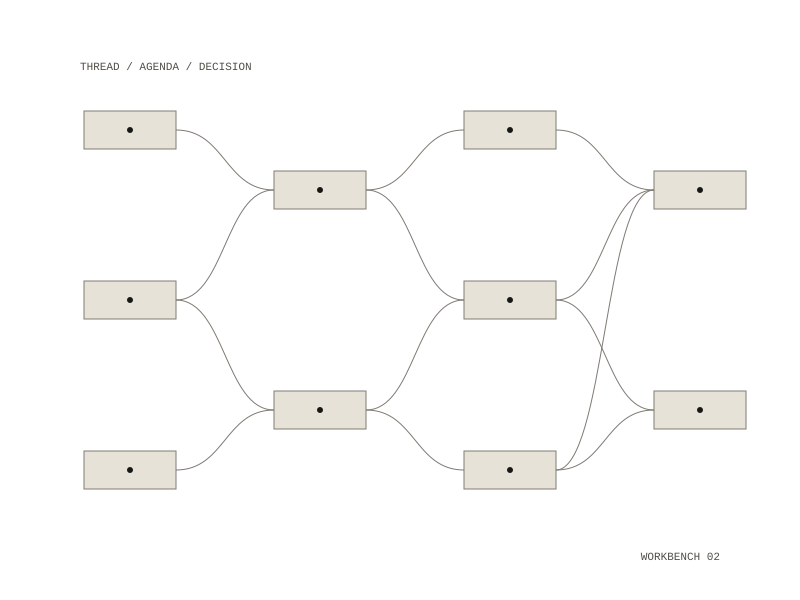

Research-manager
A Mac app for deciding what each research thread needs next
A Mac app over a folder of markdown notes that answers one question: what does each of my threads need next? It reads the notes, keeps no facts of its own, and every change it makes is either a git commit or, in a folder without git, an undo snapshot that can be put back.

Deciding
- Needs lists what every thread needs next, grouped by verb ("Write what you heard", "File what this run produced"), with the evidence under each: a path, a count, a commit you can look at.
- Worth a Look gives named reasons a thread deserves attention, each with the evidence that fired it, and never a score.
- Gone Quiet orders notes by how long since they were worked on.
- Today gathers the morning: what is due this week, what each project is waiting on, and the threads saved in the last three days.
Moving a thread
The Board sets threads in columns in the order work moves, from Draft through Active and Finished to Dormant and Archived. After a move, a line asks why ("Why take it up now?", "What did it produce?", "Why set it down?"), and an answer goes into an append-only decision log that is never edited or deleted. Promoting a thread into a project (code, engineering, writing or a science experiment) is proposed by the app and confirmed by you.
Working a thread
Notes open in Read or Edit, and a save is one commit. An open question can be answered in place, and a task ticked, and both are written straight into the note. Fetch takes a URL and holds the page in quarantine, outside the notes, until you add it to a thread. Workflows keeps the vault's own recipes and every run of each.
How it is built
The app is a native SwiftUI shell over a Rust core, and the Swift layer holds no logic. Once its image is built, the core is tested in a container with no network, and every invariant can be reached without Xcode. The app runs in the macOS App Sandbox, reaches the notes only through a folder you choose, and takes no third-party Swift packages. The chat backend starts unset, so nothing is sent until you choose one, and every request names the notes it sent, shown beside the answer.
- Year
- 2026
- Medium
- macOS app / SwiftUI / Rust
- Runs on
- macOS: a SwiftUI app over a Rust core
- Reads
- a folder of markdown notes, under git or not
- Repository: private